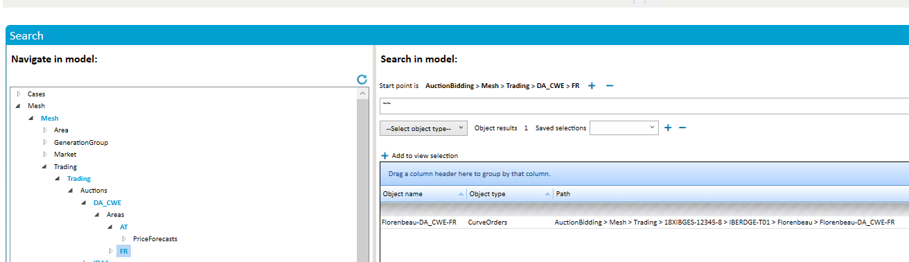
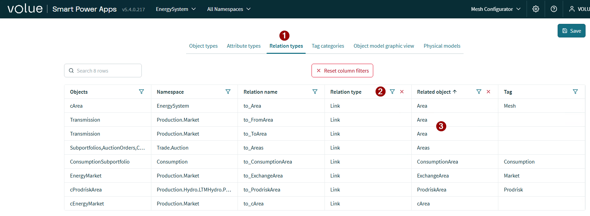

Model backup strategy and restore procedures
This document recommends a setup for backing up/restoring the Mesh model in case unintended/undesired changes have been made, such as deleting large parts of the model which would be complex to recreate manually.
Scheduled backup
The recommended setup is to have periodic backups of the production Mesh model, ideally on a daily basis. That way, if a restore is needed at some point during the next day, the latest backup should be relatively similar to the state of the model before the damaging changes were done. Backups and restores are done by using the Model.ImportExport tool; the backups themselves are .mdump binary files. We also provide a script called MeshModelBackup.ps1 which can be used to perform such backups in an easy way. The script, in turn, uses the Model.ImportExport tool internally.
Restoring the Mesh model state from a backup
There are two options for this:
Full restore
This is the recommended option. In this way we're performing an "on-top" import of the backup as described here.
- Any missing parts of the model that are present in the backup are restored.
- Any objects and attributes in the model that differ from those of the backup are replaced by the latter, including link relations. This is useful for cases where e.g. a part of the model is accidentally deleted, thus nulling out any link relations pointing to deleted objects.
- No objects are deleted from the model, even if they are not present in the backup.
While this approach is not recommended for model definition updates, it is safe to use for restoring a model from a backup.
Note! There are a few caveats:
- Any non-additive changes made since the backup will be lost.
- If the model definition has changed since the backup, the issues described here may appear.
As mentioned before, the recommended way to mitigate these issues is to have frequent backups so that a restore operation should not cause too much recent work to be lost.
To perform a full restore, run the following command:
Powel.Mesh.Model.ImportExport.exe -i <path_to_backup> -S
Replace <path_to_backup> with the path to the *_fm.mdump file produced by MeshModelBackup.ps1.
Note! This command will check whether any of the imported objects refer to a time series resource that does not exist. If so, it will create it (as an empty time series). You can pass the -T option to Model.ImportExport to disable this behaviour. In this case the attributes will still be created but not connected to a time series.
Partial restore
This option can be used if there are changes to the model since the last backup that need to be preserved. In this case, only the part of the model that needs to be restored will be imported, instead of the entire model.
This option is a bit more complicated than performing a full restore since there is no way to "extract" a part of the model directly from an .mdump file. We recommend following this procedure:
- Import the backup to a non-production environment.
- Export the desired part of the model to a separate
.mdump. - Import that
.mdumpto the production model.
The non-production environment should ideally be the corresponding test environment. If necessary, create a backup of its current state so it can be restored later once the production model is ready.
Another disadvantage of partial restores is that they are not able to automatically restore link relations to deleted objects as a full restore does. These will need to be fixed separately.
This also assumes that there are no changes to the model definition since the last backup that could affect the part of the model that is being restored. If there are, you must replicate those changes in the test environment before performing the export to avoid having conflicts later when importing to the production model.
Since this is still an "on-top" import, it should not be necessary to replicate changes that only added new objects. To view the differences between the test and production environments, you can first export each of them into an .mdump file and then compare them by running the following:
Powel.Mesh.Model.ImportExport.exe -w SummaryOfChangesReport -w <test_mdump> -w <prod_mdump> -o Report.md
Replace <test_mdump> and <prod_mdump> with the paths to the test and production .mdump files respectively.
To perform the partial restore, follow these steps:
On the test environment
- Import the latest backup:
Powel.Mesh.Model.ImportExport.exe -i <path_to_backup> -S
- Find the GUID of the root object to restore. A way to do it is to run the following:
IntMeshQuery.exe -a Lookup -p <path_to_object>
Replace <path_to_object> with the path to the desired object within the model. Alternatively, you can run:
IntMeshQuery.exe -a ModelStructure -m <model_name> --verbose > ModelStructure.txt
Replace <model_name> with the name of the target model, then locate the object's GUID in ModelStructure.txt (make sure this is the GUID of an AttributeElement).
- Export this part of the model:
Powel.Mesh.Model.ImportExport.exe -o objects_to_restore.mdump -c <object_guid>
Replace <object_guid> with the GUID from the previous step.
On the production environment
Import the .mdump file we created from the test environment:
Powel.Mesh.Model.ImportExport.exe -i objects_to_restore.mdump -S
Adding missing links
Objects linking to restored objects can be identified by using the search expression ~~ when standing on an object instance in Mesh Search on the object in the test environment:

You can check in Mesh Configurator whether a link could exist before checking all object instances:
